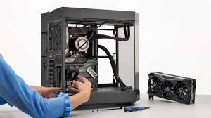
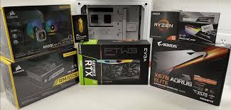
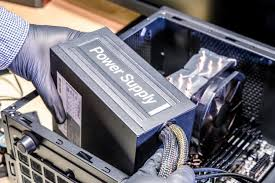
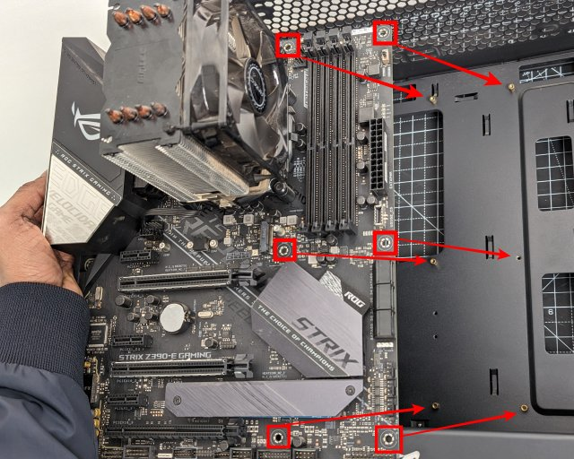
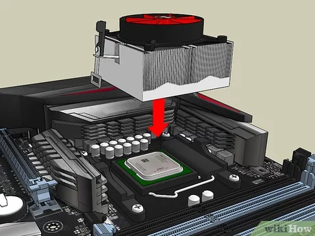
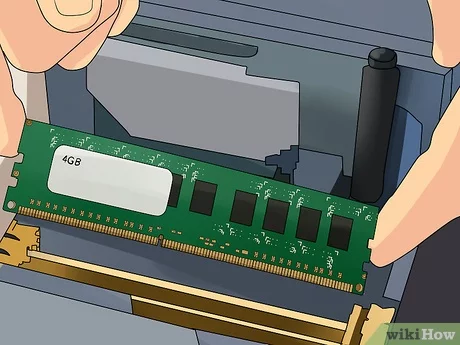
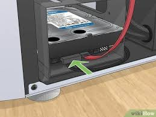
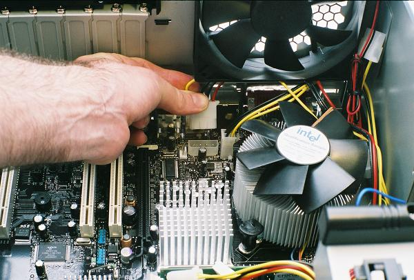
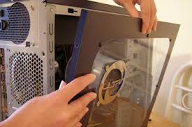

Build Guide
Building a PC from scratch can be a rewarding experience. Here's a step-by-step guide:
Step 1: Prepare Your Workspace
Choose a clean, well-lit area to work in. Make sure you have all the necessary tools such as screwdrivers, cable ties, and thermal paste.
Step 2: Unbox Components
Open the boxes containing your components carefully, ensuring you don't damage any parts. Lay out the components on a clean surface.
Step 3: Install Power Supply Unit (PSU)
Install the PSU into the designated area in the case. Use screws to secure it in place.
Step 4: Install Motherboard
Place the motherboard into the case, aligning it with the standoffs. Secure it using screws, ensuring it's firmly in place.
Step 5: Installing CPU and cooler
Install the CPU into the motherboard's socket according to the manufacturer's instructions. Apply thermal paste, then attach the CPU cooler.
Step 6: Install RAM
Insert the RAM sticks into the motherboard's memory slots, ensuring they click into place. Refer to the motherboard manual for proper configuration.
Step 7: Install Storage Drives
Mount the storage drives (SSD/HDD) into their respective drive bays. Use screws to secure them in place.
Step 8: Connect Cables
Connect power cables from the PSU to the motherboard, CPU, GPU, and storage drives. Also, connect data cables for storage drives.
Step 9: Test Your PC
Before closing up the case, connect peripherals and power on the system to test functionality.
Nice Work!!!
You just build you own PC!